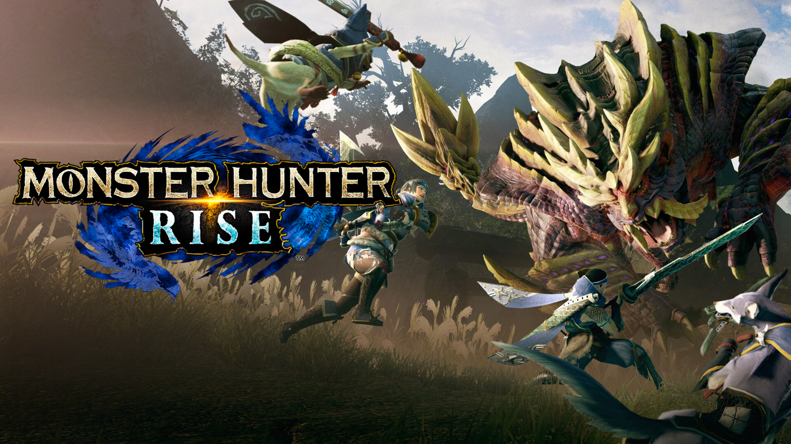

NOVOS JOGOS
Aqui você pode conferir a lista dos lançamentos mais esperados!
Cuphead: The Delicious Last Course
Lançamento: 30 de junho de 2022
Cuphead - The Delicious Last Course' é umaDLC que contém uma nova aventura e uma nova ilha para Xicrinho e Caneco explorarem, agora com a ajuda da Srta. Xicra! Use novas armas, novas relíquias e as habilidades inéditas da Srta. Xicra para enfrentar um novo elenco de chefões enormes e complexos e ajudar o Chef Pitadinha na última missão desafiadora de Xicrinho.
Monster Hunter Rise Sunbreak
Lançamento: 30 de junho de 2022
Monster Hunter Rise é um jogo eletrônico de RPG de ação desenvolvido e publicado pela Capcom. É o sexto título da série principal da franquia Monster Hunter depois de Monster Hunter: World e foi lançado mundialmente em 26 de março de 2021 para Nintendo Switch.
Arcadegeddon
Lançamento: 8 de julho de 2022
Gilly, o dono de um fliperama local, está tentando salvar seu negócio de uma megacorporação sem rosto. Para isso, ele cria um superjogo, que, infelizmente, é hackeado e infectado com um vírus pela megacorporação. Você precisa salvar o jogo e o último fliperama da sua cidade natal. Este jogo de tiro multijogador em constante evolução permite que você e até três amigos explorem vários biomas, minijogos, encontrem baús escondidos e derrotem vários tipos de inimigos e chefes. Arcadegeddon é uma experiência multijogador cooperativa que fornece uma mistura de JxA e JxJ, permitindo diferentes ritmos de jogo.
Forza Horizon 5: Hot Wheels
Lançamento: 19 de julho de 2022

Chamando todos os destemidos motoristas e criadores! Decole para o visualmente impressionante, emocionante novo Horizon Hot Wheels Park nas alturas do México. Experiencie as mais rápidas e mais extremas pistas já elaboradas. Crie, construa e compartilhe sua própria aventura Hot Wheels com 80 distintas peças de percurso. Corra com 10 incríveis novos carros incluindo o veloz 2021 Hennessey Venom F5 e o icônico 2000 Hot Wheels Deora II.
Stray
Lançamento: 19 de julho de 2022

Perdido, sozinho e separado da família, um gato de rua deve desvendar um mistério antigo para escapar de uma cidade há muito esquecida. Stray é um jogo de aventura de gato em terceira pessoa ambientado em becos detalhados e iluminados por neon de uma cibercidade decadente e os ambientes sombrios de seu submundo decadente. Percorra os arredores altos e baixos, defenda-se contra ameaças imprevistas e resolva os mistérios deste lugar hostil habitado por droides curiosos e criaturas perigosas. Veja o mundo pelos olhos de um gato e interaja com o ambiente de forma lúdica. Seja furtivo, ágil, bobo e às vezes o mais irritante possível com os estranhos habitantes deste mundo misterioso. Ao longo do caminho, o gato faz amizade com um pequeno drone voador, conhecido apenas como B-12. Com a ajuda deste companheiro recém-descoberto, a dupla deve encontrar uma saída. Stray é desenvolvido pela BlueTwelve Studio, uma pequena equipe do sul da França composta principalmente por gatos e um punhado de humanos.
Immortality
Lançamento: 26 de julho de 2022
Marissa Marcel era uma estrela de cinema. Ela fez três filmes. Mas nenhum dos filmes jamais foi lançado. E Marissa Marcel desapareceu. O novo jogo de Sam Barlow, criador de Her Story.
Lost Epic
Lançamento: 28 de julho de 2022
LOST EPIC é um RPG de ação 2D side-scrolling sobre uma guerra entre deuses e a humanidade. O jogador se torna o cavaleiro que desafia a divindade, God Slayer, e explora o mundo conhecido como Sanctum para deixar o Pantheon of Six de joelhos. Combine ataques e habilidades divinas para criar um combo satisfatório. Cada arma tem sua própria Habilidade Divina. Você pode personalizar seu cavaleiro combinando suas habilidades divinas favoritas. Ao ativar sua habilidade Divina no momento certo, você pode derrubar um inimigo e causar dano massivo.
Xenoblade Chronicles 3
Lançamento: 29 de julho de 2022
Xenoblade Chronicles 3 é um jogo de RPG de ação desenvolvido pela Monolith Soft e publicado pela Nintendo para o Nintendo Switch. É uma parte da série Xenoblade Chronicles de mundo aberto, ela própria parte da franquia Xeno maior.
Forspoken
Lançamento: 11 de outubro de 2022
Leve Frey em uma aventura inesquecível à procura de um caminho de volta para casa após ser misteriosamente transportada para uma terra extraordinária. Desvende os mistérios de Athia durante as viagens de Frey pela nefasta Ruptura e descubra como manipular um poder extraordinário.
Dead Space Remake
lançamento: 27 de janeiro de 2023

O remake de Dead Space era esperado pelos fãs para outubro de 2022, no entanto, em março deste ano o insider Jeff Grubb alertou para um possível adiamento, o que se confirma agora. De acordo com fontes a Grubb na época, o atraso não seria devido a problemas no desenvolvimento, para alívio dos jogadores, mas apenas uma decisão da EA de dar mais tempo para revisão do jogo.
Gotham Knights
Lançamento: 25 de outubro de 2022
Gotham Knights é um futuro jogo RPG eletrônico de ação baseado no personagem da DC Comics Batman e seus personagens secundários. O jogo está sendo desenvolvido pela WB Games Montréal e será publicado pela Warner Bros. Interactive Entertainment.
Steelrising
Lançamento: 8 de setembro de 2022
RPG de ação dos criadores de GreedFall, foi adiado para 8 de setembro. Inicialmente previsto para chegar em junho ao PS5, Xbox Series e PC, o game também teve cinco minutos de gameplay divulgados, onde é possível observar mais detalhes das mecânicas e ambientação.
Sem data prévia
- Hogwarts Legacy
- Avatar: Frontiers of Pandora
- God of War: Ragnarok sem data
- Pokémon Scarlet e Violet
- Mario + Rabbids Sparks of Hope
- MultiVersus
- Bayonetta 3
- Boundary
- Card Shark
- A Quiet Place
- Aftermath